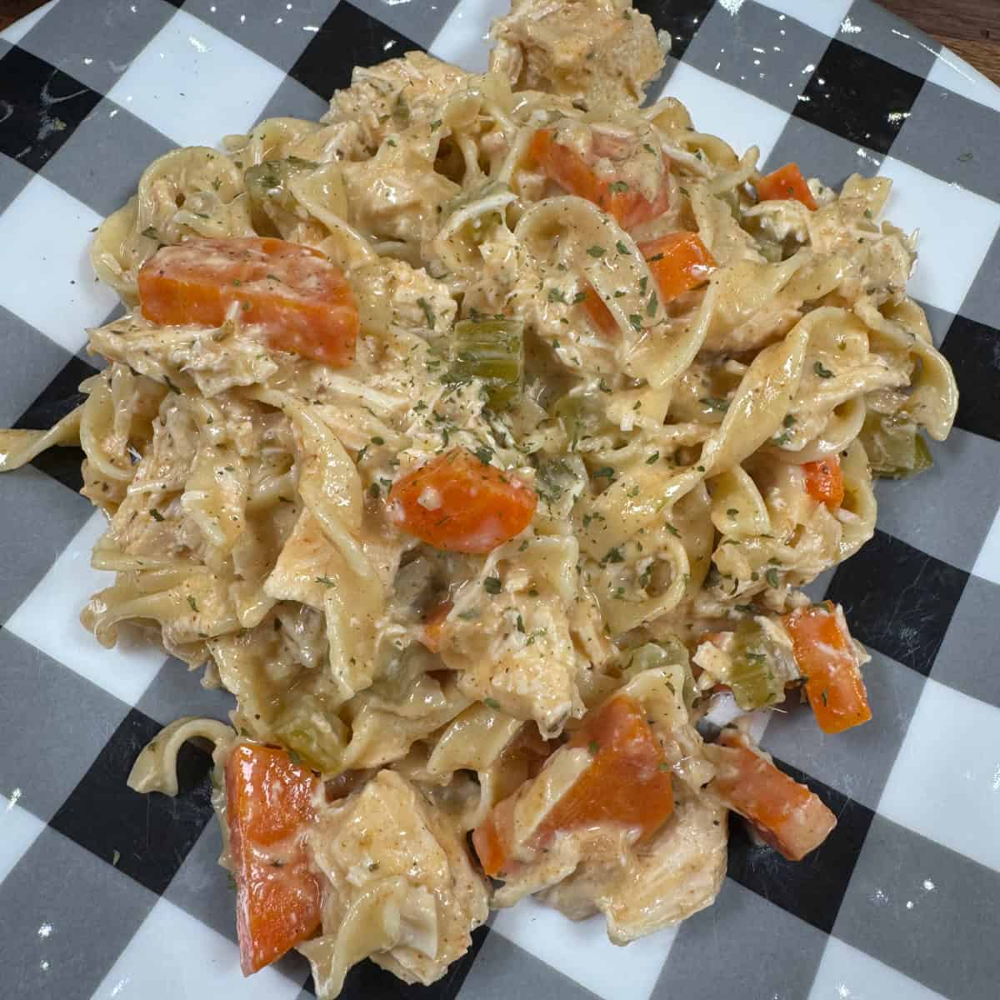

Home Page
Creamy Crockpot Chicken

Description
Crockpot meals are an iconic piece of life in the midwest. You see, we're lazy so being able to just dump a
bunch of anything into a pot and turn that sucker on low-medium heat for a few hours is way to appealing to
not take advantage of! The crock pot recipe we'll be focusing on now is chicken based but feel free to make
it your own.
Ingredients
- 1 lb. of chicken breasts
- 1 tsp of minced garlic
- 2 cups of chopped veggies (carrots, celery, onion)
- 10 oz can of cream of chicken soup
- 1 cup of chicken broth
- 8-10 oz of egg noodles
- 1/2 cup of heavy cream
- Any spices you'd like
- Salt, pepper, paprika, etc.
Steps
- Dump and stir all the ingredients together into your crockpot except for the noodles and spices
- Turn the heat to low and come back in 6 hours to check on it
- Ensure the chicken is cooked, if not cooked through leave it on for a bit longer and come back to check on it
- Boil your egg noodles to your desired firmness
- Once your noodles are cooked mix the noodles in the crockpot along with your spices
- Stir once more and then enjoy!